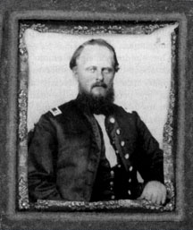

|

NAME: Thomas Epaphroditus Howle
BORN: 1825
DIED: 1862
ALLEGIANCE: Confederate
HIGHEST RANK: Captain
UNIT: 8th South Carolina Infantry, Company F (Darlington
Grays), Company M
RECORD: Enlisted in Darlington Grays, April 1861;
elected first lieutenant. Mustered into Company F, 8th South
Carolina Infantry, April 13, 1861. Fought in First Battle of
Manassas, July 1861. Promoted to captain, November 1861.
Reenlisted in Company M at reorganization, April 1862;
elected captain, May 1862. Participated in the Siege of
Yorktown, April-May 1862, and Seven Days Battles, June-July
1862. Killed in action at Battle of Antietam, September 17,
1862.
|
|
Abraham Lincoln reportedly once said, "Any man who wants
to disrupt this Union needs all the religion in sight to
save him." Staunch Southerner Thomas Epaphroditus Howle had
religion in spades, yet it was not enough to save him from a
Union bullet.
Born August 19, 1825, Thomas Epaphroditus Howle was the only son born to
James Howle and his first wife, and was given a Biblical
name. His father would marry twice more and eventually
father 16 children in all. The Howle family engaged in daily
prayer and Bible study--a practice that helped form young
Thomas into the faith-filled adult that he would become.
As a young man, Howle worked on his father's plantation
and later became a merchant and the postmaster of
Leavensworth, South Carolina. In 1852 he married Elizabeth
Sarah Vann and they joined Black Creek Church, where he
served as a deacon and superintendent of Sunday school. He
also contributed financially to the erection of a church
building and the purchase of the church's first silver
communion service.
Howle was among the first to sign up when the Darlington
Grays formed in early 1861. He was elected first lieutenant,
and his unit became Company F of the 8th South Carolina
Infantry. After participating in the First Battle of
Manassas in July, Howle was promoted to captain in November
1861. He convinced about half of his company to reenlist a
few months later, and recruited the remainder of the
reorganized Company M while on a 45-day furlough. Once again
elected captain, Howle served with the 8th South Carolina
until he lost his life during the Battle of Antietam, or
Sharpsburg, Maryland, in September 1862.
The former deacon and Sunday school leader left behind a
wife and five children, the youngest of whom was born just
after Howle enlisted. In Darlingtoniana: A History of
Darlington County, Howle is honored for his "integrity,
moral strength and love of home and family," and is
described as "a man of broad knowledge and ... a Christian
gentleman." If his family and his fellow church members ever
questioned why such a devoted Christian gentleman had his
life cut tragically short, perhaps they took comfort in the
sentiment expressed in another of Lincoln's maxims: "The
Almighty has His own purposes."
Source: Civil War Times Illustrated
42:4 (October 2003), 22.
|